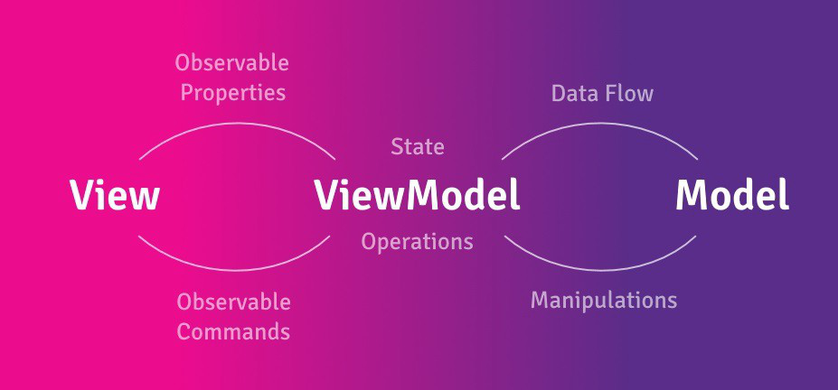
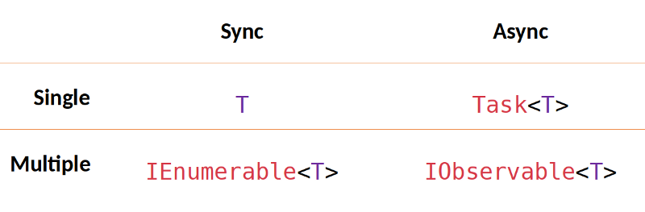
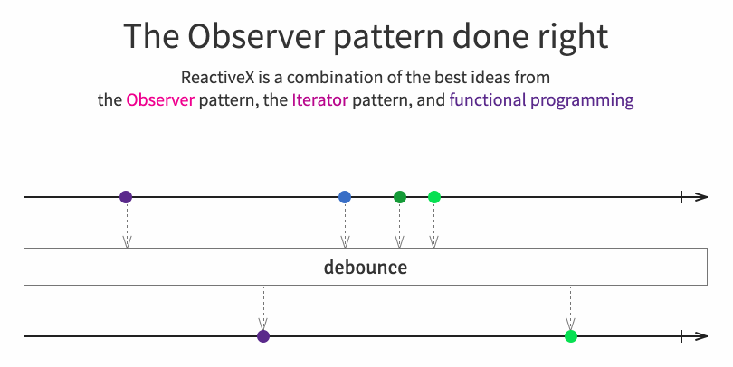
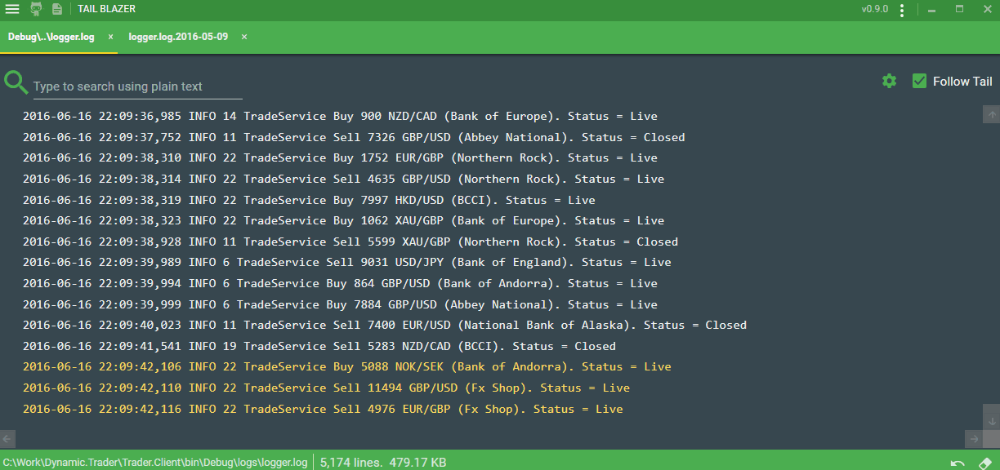
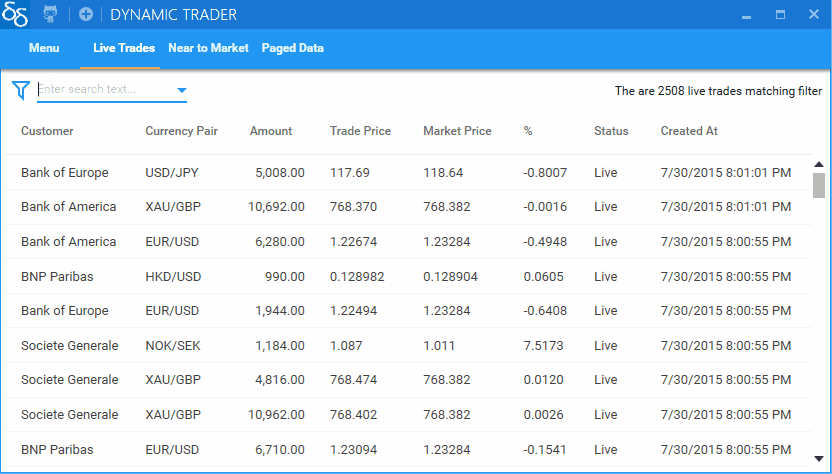
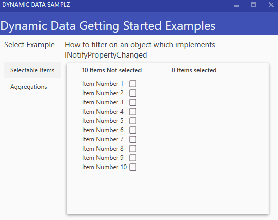

DynamicData: Изменяющиеся коллекции, шаблон проектирования MVVM и реактивные расширения
В феврале 2019 года состоялся релиз ReactiveUI 9 — кроссплатформенного фреймворка для построения приложений с GUI на платформе Microsoft .NET. ReactiveUI — это инструмент для тесной интеграции реактивных расширений с шаблоном проектирования MVVM. Знакомство с фреймворком можно начать с серии статей на Хабре или со вступительной страницы документации. Обновление ReactiveUI 9 включает в себя множество исправлений и улучшений, но, пожалуй, самое интересное и значимое изменение — тесная интеграция с фреймворком DynamicData, позволяющим работать с изменяющимися коллекциями в реактивном стиле. Попробуем разобраться, в каких случаях нам может пригодиться DynamicData и как устроен внутри этот мощный реактивный фреймворк!
Предпосылки
Для начала определим круг задач, решаемых DynamicData, и выясним, чем нас не устраивают стандартные инструменты для работы с изменяющимися наборами данных из пространства имён System.Collections.ObjectModel.
Шаблон MVVM, как известно, предполагает разделение ответственности между слоями модели, представления и модели представления приложения. Слой модели представлен доменными сущностями и сервисами, и ничего не знает про модель представления. Слой модели инкапсулирует в себе всю сложную логику приложения, а модель представления делегирует операции модели, предоставляя представлению доступ к информации о текущем состоянии приложения через наблюдаемые свойства, команды и коллекции. Стандартный инструмент для работы с изменяющимися свойствами — это интерфейс INotifyPropertyChanged, для работы с действиями пользователя — ICommand, а для работы с коллекциями — INotifyCollectionChanged и реализации ObservableCollection и ReadOnlyObservableCollection.

Реализация INotifyPropertyChanged и ICommand обычно остаётся на совести разработчика и применяемого MVVM фреймворка, а вот использование ObservableCollection накладывает на нас ряд ограничений! Например, мы не можем изменить коллекцию из фонового потока без Dispatcher.Invoke или схожего вызова, а это могло бы быть полезно в случае работы с массивами данных, которые синхронизирует с сервером некоторая фоновая операция. Необходимо заметить, что в идиоматичном MVVM слой модели не должен знать об используемой архитектуре GUI-приложения, и быть совместимым с моделью из MVC или MVP, и именно поэтому многочисленные Dispatcher.Invoke, позволяющие получить доступ к элементу управления пользовательского интерфейса из фонового потока, запущенного в доменном сервисе, нарушают принцип разделения ответственности между слоями приложения.
Конечно, в доменном сервисе можно было бы объявить event, а в качестве аргументов события передавать чанк с изменившимися данными. Затем подписаться на событие, завернуть вызов Dispatcher.Invoke в интерфейс, чтобы не зависеть от используемого GUI фреймворка, переместить Dispatcher.Invoke в модель представления и изменить ObservableCollection нужным образом, однако существует намного более простой и элегантный способ решения обозначенного круга задач без необходимости написания велосипеда. Приступим к изучению!
Реактивные расширения. Управляем потоками данных
Для полного понимания абстракций, вводимых DynamicData, и принципов работы с изменяющимися реактивными наборами данных, вспомним, что такое реактивное программирование и как его применять в контексте платформы Microsoft .NET и шаблона проектирования MVVM. Способ организации взаимодействия между компонентами программы может быть интерактивным и реактивным. При интерактивном взаимодействии функция-потребитель синхронно получает данные от функции-поставщика (pull-based подход, T, IEnumerable), а при реактивном взаимодействии функция-поставщик асинхронно поставляет данные функции-потребителю (push-based подход, Task, IObservable).

Реактивное программирование — это программирование с помощью асинхронных потоков данных, а реактивные расширения — частный случай его реализации, основанный на интерфейсах IObservable и IObserver из пространства имён System, определяющий ряд LINQ-подобных операций над интерфейсом IObservable, называемых LINQ over Observable. Реактивные расширения поддерживают .NET Standard и работают везде, где работает платформа Microsoft .NET.

Фреймворк ReactiveUI предлагает разработчикам прикладных приложений воспользоваться реактивной реализацией интерфейсов ICommand и INotifyPropertyChanged, предоставляя такие мощные инструменты, как ReactiveCommand<TIn, TOut> и WhenAnyValue. WhenAnyValue позволяет преобразовать свойство класса, реализующего INotifyPropertyChanged, в поток событий типа IObservable<T>, что упрощает реализацию зависимых свойств.
public class ExampleViewModel : ReactiveObject
{
[Reactive]
// Атрибут ReactiveUI.Fody, занимается
// аспектно-ориентированным внедрением
// OnPropertyChanged в сеттер Name.
public string Name { get; set; }
public ExampleViewModel()
{
// Слушаем OnPropertyChanged("Name").
this.WhenAnyValue(x => x.Name)
// Работаем с IObservable<string>
.Subscribe(Console.WriteLine);
}
}
ReactiveCommand<TIn, TOut> позволяет работать с командой, как с событием типа IObservable<TOut>, которое публикуется всякий раз, когда команда завершает выполнение. Также у любой команды существует свойство ThrownExceptions типа IObservable<Exception>.
// ReactiveCommand<Unit, int>
var command = ReactiveCommand.Create(() => 42);
command
// Работаем с IObservable<int>
.Subscribe(Console.WriteLine);
command
.ThrownExceptions
// Работаем с IObservable<Exception>
.Select(exception => exception.Message)
// Работаем с IObservable<string>
.Subscribe(Console.WriteLine);
command.Execute().Subscribe();
// Вывод: 42
Всё это время мы работали с IObservable<T>, как с событием, которое публикует новое значение типа T всякий раз, когда меняется состояние объекта, за которым ведётся наблюдение. Проще говоря, IObservable<T> — это поток событий, последовательность, растянутая во времени.
Разумеется, мы могли бы точно так же легко и непринуждённо работать с коллекциями — всякий раз, когда коллекция меняется, публиковать новую коллекцию с изменившимися элементами. В таком случае, публикуемое значение имело бы тип IEnumerable<T> или более специализированный, а само событие — тип IObservable<IEnumerable<T>>. Но, как правильно подметит критически мыслящий читатель, это чревато серьёзными проблемами с производительностью приложения, особенно, если в нашей коллекции не десяток элементов, а сотня, а то и несколько тысяч!
Введение в DynamicData
DynamicData — это библиотека, которая позволяет использовать всю мощь реактивных расширений при работе с коллекциями. Реактивные расширения из коробки не предоставляют оптимальных способов для работы с изменяющимися наборами данных, и задача DynamicData — исправить это. В большинстве прикладных приложений существует необходимость динамически обновлять коллекции — обычно, коллекция заполняется некоторыми элементами при запуске приложения, и далее асинхронно обновляется, синхронизируя информацию с сервером или базой данных. Современные приложения довольно сложны, и зачастую возникает необходимость создавать проекции коллекций — фильтровать, трансформировать или сортировать элементы. DynamicData была разработана как раз чтобы избавиться от того невероятно сложного кода, который потребовался бы нам для управления динамически меняющимися наборами данных. Инструмент активно развивается и дорабатывается, и уже сейчас поддерживается более 60 операторов для работы с коллекциями.

DynamicData — это не альтернативная реализация ObservableCollection<T>. Архитектура DynamicData основана прежде всего на концепциях предметно-ориентированного программирования. Идеология использования основана на том, что вы управляете некоторым источником данных, коллекцией, к которой имеет доступ код, ответственный за синхронизацию и изменение данных. Далее, вы применяете ряд операторов к источнику, с помощью которых можно декларативно трансформировать данные, без необходимости вручную создавать и изменять другие коллекции. Фактически, с DynamicData вы разделяете операции чтения и записи, причём читать можете только реактивным способом — поэтому наследуемые коллекции всегда будут синхронизированы с источником.
Вместо классического IObservable<T>, DynamicData определяет операции над IObservable<IChangeSet<T>>> и IObservable<IChangeSet<TValue, TKey>>, где IChangeSet — чанк, содержащий информацию об изменении коллекции — тип изменения и элементы, которые были затронуты. Такой подход позволяет существенно улучшить производительность кода для работы с коллекциями, написанного в реактивном стиле. При этом, IObservable<IChangeSet<T>> всегда можно трансформировать в обычный IObservable<IEnumerable<T>>, если возникнет необходимость обработать все элементы коллекции сразу. Если звучит сложно — не пугайтесь, из примеров кода всё станет ясно и прозрачно!
Пример использования DynamicData
Давайте рассмотрим ряд примеров, чтобы лучше понять, как работает DynamicData, чем отличается от System.Reactive и какие задачи поможет решить рядовым разработчикам прикладного программного обеспечения с GUI. Начнём с комплексного примера, опубликованного автором DynamicData на GitHub. В примере источником данных является SourceCache<Trade, long>, содержащий коллекцию сделок. Задача — показать только активные сделки, трансформировать модели в proxy-объекты, отсортировать коллекцию.
// Стандартная коллекция из System.Collections.ObjectModel,
// к которой будет привязан графический элемент управления.
ReadOnlyObservableCollection<TradeProxy> list;
// Изменяемый источник данных, содержащий модели сделок.
// Можем использовать Add, Remove, Insert и подобные методы.
var source = new SourceCache<Trade, long>(trade => trade.Id);
var cancellation = source
// Трансформируем источник в наблюдаемый набор изменений.
// Имеем тип IObservable<IChangeSet<Trade, long>>
.Connect()
// Дальше по цепочке пропустим только активные сделки.
.Filter(trade => trade.Status == TradeStatus.Live)
// Трансформируем модели в прокси-объекты.
// Имеем тип IObservable<IChangeSet<TrandeProxy, long>>
.Transform(trade => new TradeProxy(trade))
// Отсортируем объекты по времени.
.Sort(SortExpressionComparer<TradeProxy>
.Descending(trade => trade.Timestamp))
// Обновляем GUI только из главного потока.
.ObserveOnDispatcher()
// Привяжем список отсортированных прокси-объектов
// к коллекции из System.Collections.ObjectModel.
.Bind(out list)
// Убедимся, что по мере удаления элементов из
// коллекции ресурсы будут освобождены.
.DisposeMany()
.Subscribe();
В примере выше, при изменении SourceCache, являющегося источником данных, ReadOnlyObservableCollection также соответствующим образом изменится. При этом, при удалении элементов из коллекции будет вызван метод Dispose, коллекция всегда будет обновляться только в GUI потоке и оставаться отсортированной и отфильтрованной. Круто, никаких Dispatcher.Invoke и сложного кода!
Источники данных SourceList и SourceCache
DynamicData предоставляет две специализированные коллекции, которые могут быть использованы в качестве изменяемого источника данных. Эти коллекции — типы SourceList и SourceCache<TObject, TKey>. Рекомендуется использовать SourceCache всегда, когда TObject имеет уникальный ключ, в противном случае использовать SourceList. Эти объекты предоставляют знакомый .NET разработчикам API для изменения данных — методы Add, Remove, Insert и подобные. Чтобы преобразовать источники данных в IObservable<IChangeSet<T>> или IObservable<IChangeSet<T, TKey>>, используйте оператор .Connect(). Например, если у вас есть сервис, обновляющий в фоне коллекцию элементов, вы с лёгкостью сможете синхронизировать список этих элементов с GUI, без Dispatcher.Invoke и архитектурных излишеств:
public class BackgroundService : IBackgroundService
{
// Объявляем изменяемый список сделок.
private readonly SourceList<Trade> _trades;
// Выставляем наружу поток изменений коллекции.
// Если ожидается, что будет более одного подписчика,
// рекомендуется использовать оператор Publish() из Rx.
public IObservable<IChangeSet<Trade>> Connect() => _trades.Connect();
public BackgroundService()
{
_trades = new SourceList<Trade>();
_trades.Add(new Trade());
// Изменяем список как хотим!
// Даже из фонового потока.
}
}
DynamicData использует встроенные типы .NET для отображения данных во внешний мир. С помощью мощных операторов DynamicData мы можем преобразовать IObservable<IChangeSet<Trade>> в ReadOnlyObservableCollection нашей модели представления.
public class TradesViewModel : ReactiveObject
{
private readonly ReadOnlyObservableCollection<TradeVm> _trades;
public ReadOnlyObservableCollection<TradeVm> Trades => _trades;
public TradesViewModel(IBackgroundService background)
{
// Подключимся к источнику, трансформируем элементы, привяжем
// их к коллекции из System.Collections.ObjectModel.
background.Connect()
.Transform(x => new TradeVm(x))
.ObserveOn(RxApp.MainThreadScheduler)
.Bind(out _trades)
.DisposeMany()
.Subscribe();
}
}
Кроме Transform, Filter и Sort, DynamicData включает в себя массу других операторов, поддерживает группировку, логические операции, разглаживание коллекции, применение аггрегирующих функций, исключение одинаковых элементов, подсчёт элементов и даже виртуализацию на уровне модели представления. Подробнее обо всех операторах можно почитать в README проекта на GitHub.

Однопоточные коллекции и отслеживание изменений
Помимо SourceList и SourceCache, библиотека DynamicData также включает в себя однопоточную реализацию изменяемой коллекции — ObservableCollectionExtended. Чтобы синхронизировать две коллекции в вашей модели представления, объявите одну из них как ObservableCollectionExtended, а другую — как ReadOnlyObservableCollection и воспользуйтесь оператором ToObservableChangeSet, который ведёт себя так же, как и Connect, но предназначен для работы с ObservableCollection.
// Объявим производную коллекцию.
ReadOnlyObservableCollection<TradeVm> _derived;
// Объявим и инициализиуем коллекцию-источник.
var source = new ObservableCollectionExtended<Trade>();
source.ToObservableChangeSet(trade => trade.Key)
.Transform(trade => new TradeProxy(trade))
.Filter(proxy => proxy.IsChecked)
.Bind(out _derived)
.Subscribe();
DynamicData также поддерживает отслеживание изменений в классах, реализующих интерфейс INotifyPropertyChanged. Например, если вы хотите получать уведомления об изменении коллекции всякий раз, когда свойство какого-либо элемента изменяется, используйте оператор AutoRefresh и передайте аргументом селектор нужного свойства. AutoRefesh и другие операторы DynamicData позволят легко и непринуждённо валидировать огромное количество форм и вложенных форм, отображаемых на экране!
// Тип IObservable<bool>
var isValid = databases
.ToObservableChangeSet()
// Подписываемся только на изменения свойства IsValid.
.AutoRefresh(database => database.IsValid)
// Получаем доступ ко всем элементам коллекции одновременно.
.ToCollection()
// Проверяем, что все элементы валидны.
.Select(x => x.All(y => y.IsValid));
// Если используется ReactiveUI, IObservable<bool>
// можно преобразовать в свойство ObservableAsProperty.
_isValid = isValid
.ObserveOn(RxApp.MainThreadScheduler)
.ToProperty(this, x => x.IsValid);
На основе функциональности DynamicData можно быстро создавать достаточно сложные интерфейсы — особенно это актуально для систем, отображающих большое количество данных в реальном времени, систем обмена мгновенными сообщениями, систем мониторинга.

Заключение
Реактивные расширения — мощный инструмент, позволяющий декларативно работать с данными и пользовательским интерфейсом, писать переносимый и поддерживаемый код, решать сложные задачи простым и элегантным способом. ReactiveUI позволяет разработчикам на платформе .NET тесно интегрировать реактивные расширения в свои проекты, использующие архитектуру MVVM, предоставляя реактивные реализации INotifyPropertyChanged и ICommand, а DynamicData заботится о синхронизации коллекций, реализуя INotifyCollectionChanged, расширяя возможности реактивных расширений и заботясь о производительности.
Библиотеки ReactiveUI и DynamicData совместимы с большинством популярных GUI фреймворков платформы .NET, включая Windows Presentation Foundation, Universal Windows Platform, Avalonia, Xamarin.Android, Xamarin Forms, Xamarin.iOS. Начать изучение DynamicData можно с соответствующей страницы документации ReactiveUI. Также обязательно ознакомьтесь с проектом DynamicData Snippets, содержащим примеры использования DynamicData на все случаи жизни.